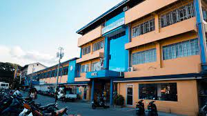

Welcome to SMCC
Be One of Us!
Be One of Us!
Saint Michael College of Caraga, also referred to by its acronym SMCC, is a private, Roman Catholic, basic education, and higher education institution run by the Roman Catholic Diocese of Butuan in Nasipit, Agusan del Norte, Philippines.
It was established in 1948 by the Missionaries of the Sacred Heart (MSC) fathers. The main campus is located at Atupan Street, Barangay 4 Poblacion, Nasipit, Agusan del Norte. The second campus, situated in Brgy. Triangulo, houses the elementary department.
SMCC Website | Contact: (085) 283 0529